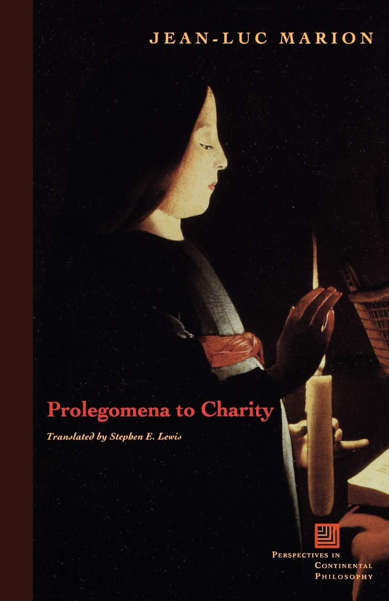
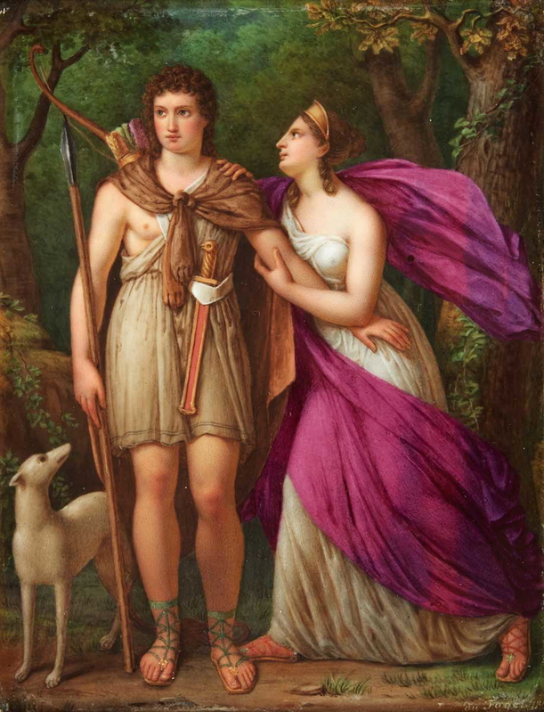
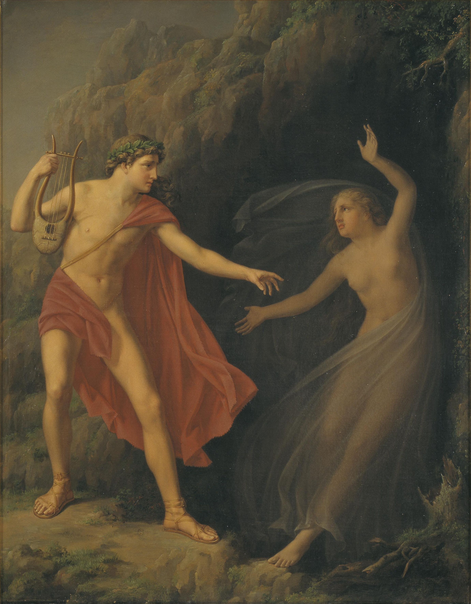

Love: A Crossing of Aims
Prelude

The nature of love is a question as old as our species. It is not directly characterizable, for reasons we will discuss later. Prompted by a Lupe song that I will show at the end of this piece, I've decided to read around, looking for a comprehensive system that matches my perspective. This eventually came in the form of Jean-Luc Marion's "Intentionality of love", part of the book "Prolegomena to Charity". This essay will not be a comprehensive breakdown of phenomenology, nor of Jean-Luc's work, but rather a specific application of it to this specific case.
Objects and their perception
For starters, we must define our terms:
- Consciousness is what we directly know, with the important mention that it is not reflexive (conscious of itself). You can't be conscious of your specific consciousness.
- Intentionality is being conscious of something, and is the way we can think about something.
- Perception is what we do to take in information from the outside. It concerns only (mental) objects, things that can be represented in the consciousness as my objects.
It's also worth mentioning I will only be talking about romantic love, that between two individuals.
Love's elusive nature
As promised earlier firstly an elaboration on love's elusive nature is owed. Love, when attempted to be described directly, becomes an object. The loved can't be represented either, since it would lead to its reduction to either animal, slave, object or optical illusion. Love should, by hypothesis, transcend the lived experiences to reach alterity.

This could lead to the conclusion that it is something purely subjective and arbitrary, uncategorisable, that happens inside each consciousness with no constant characteristics. This definition has many flaws, the most apparent being one of the cases mentioned above, that of the optical illusion, a reflection of the self onto another. This false love, can be more accurately described as loving the collection of lived experiences evoked by someone. An example of this is the Greek story of Phaedra and Hippolytus. Loving Hippolytus merges so much with the lived experience and so little with his person that he can be condemned to death by her. Accordingly, there is no contradiction in hating and loving the same person.
The loved simply becomes an unseen mirror of the lover, an incomplete definition of him, filling perfectly the desire and capacity for experimentation. This acts as an idol to the lover, attracting what it loves to the consciousness, like the sun attracts planets; like hatred attracts hatred: necessarily. "Love, loved for itself, inevitably ends as self-love."
Let's presume this love is unknowable, for the sake of the argument, the reflection is an infinite resolution one, that will forever draw back upon its approach, a horizon line of the self. Even then, the conscious will still attempt to objectify the loved. No matter it being infinitely distant and unknowable, we still see the loved as object not subject, with each success of intentionality reaching an object, or aiming at it thus failing to encounter the loved.
Solution- the gaze

How can we ensure the love doesn't degenerate, if there is no way out of objectifying the perception of the loved? The answer lies in changing the prerequisites. You must give up on attempting to see the other, even as subject, the loved having to remain invisible, since its perception would ipso facto disqualify it as subject. The classic example used to showcase this is the story of Orpheus. When he attempts to see Eurydice, when they are leaving the underworld, he transforms her into an object through perception, thus disqualifying her as his beloved.
The only way to achieve this is the loved playing the role of the I, the consciousness itself, exerting "an intention that renders the objectified objectives visible, therefore rendering him invisible". For this, to truly gaze on the other person, we must sacrifice the intentional consciousness attached to him.
"If I want truly to gaze on the other, I attach myself neither to her silhouette, however pleasing it might be, nor to some voluntary or involuntary sign that her bearing might reveal, but to her face; I face up to her (je l'envisage). “Facing up” to her does not mean fixing my gaze on her mouth or some other emblematic element but fixing exclusively on her eyes, and directly in their center—this ever black point, for it is in fact a question of a simple hole, the pupil. Even for a gaze aiming objectively, the pupil remains a living refutation of objectivity, an irremediable denial of the object; here, for the first time, in the very midst of the visible, there is nothing to see, except an invisible and untargetable (invisable) void."
This act hides all parts of the other from me, the two gazes exposing themselves to one another. Think of this like the unmoving tension of two arm wrestlers, or two swordsmen crossing their swords: to the outside, nothing is moving, only the two feel anything happening. By this logic, love would be: "A visible jubilation of invisibles, without any visible object, yet in balance, through the crossing of aims"
This still leaves one major issue to be discussed, that of fungibility. If love is just the crossing of the gazes, why is it not equal no matter with whom it is done? If, by hypothesis, it is or should be by injunction, that is a neutralisation of it. If we argue as Emmanuel Levinas did, that the face is that which discriminates (or any other stand in for that matter) we circle back around the problem of objectification, this time to that stand in.
To solve this, we can't define love as a universal. It is not about finding "one" but rather "this one". But what separates "this one" from that one, if we can't discriminate based on anything? The answer lies in something called haecceitas. It is something situated beyond the origin, and essence, piercing to the level of the unique: that which makes something that thing, without any attributes. If essence is what is common between a category of things, haecceitas is the that-ness of one in particular.
Finishing, Jean-Luc gives the final definition for love: "the act of a gaze that renders itself back into another gaze in a common unsubstitutability". The final note the author ends on is another prerequisite of the definition, that this surrender "requires faith".
Faith
The definition above is one sided, it describes the actants as loved and lover, therefore requiring reciprocity. In the act of faith you need to assume the other will be on the same wavelength as you. It is something akin to the statement "I will do everything in my power to make your life good and I trust you will return the favour ". Anything less than this either becomes slavery or emotional masturbation.
Slavery is where one person gives their everything and the other person still holds back. It is not necessarily about the power dynamics (the slave can be the leader of the relationship) but often also is. Emotional masturbation is when two people engage in love for the sake of love. As said earlier: "Love, loved for itself, inevitably ends as self-love." when the goal is pleasure on both sides, you can end up alone, with the other as just a stand in, each trying to achieve their personal goal.
The solution is a leap of faith, and trusting the other person to do the same. Somehow, this blind act, however difficult, seems like the only way to truly build something, since you can do more for the other than you can do for yourself. Love carried out is supposed to change you. As Jung says in "The psychology of Transference", an abandonment of the Ego (referred to as its death) is required to achieve the merging of the two halves into one whole.
It's not design
Now, as promised in the prelude:
What if I said, love was a lie though?
It was more like hate with a eye closed
And the other eye, had the eye rolled
That's contempt and ignorance, I know
But what do I know?
Only thing that I seen was the inside, of a blindfold
And you just as blind as me
So how I look? Askin' you where do I go
Eye and I keep high hope alive though
That love's not a lie it just likes to lie low
Likes to hide right there in plain sight
And you got to find it with your eyes, closed
Bibliography: